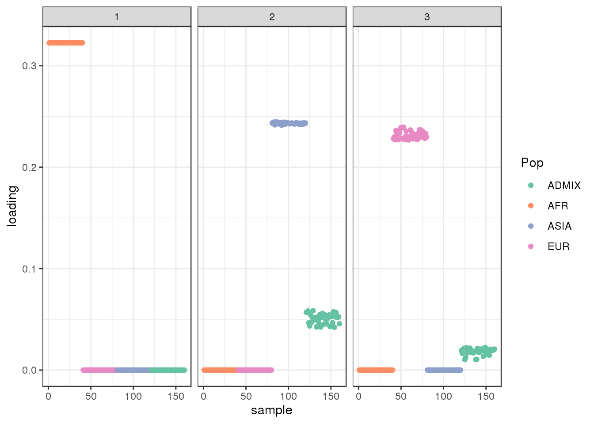
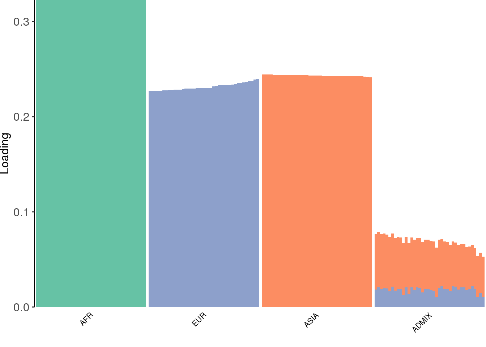
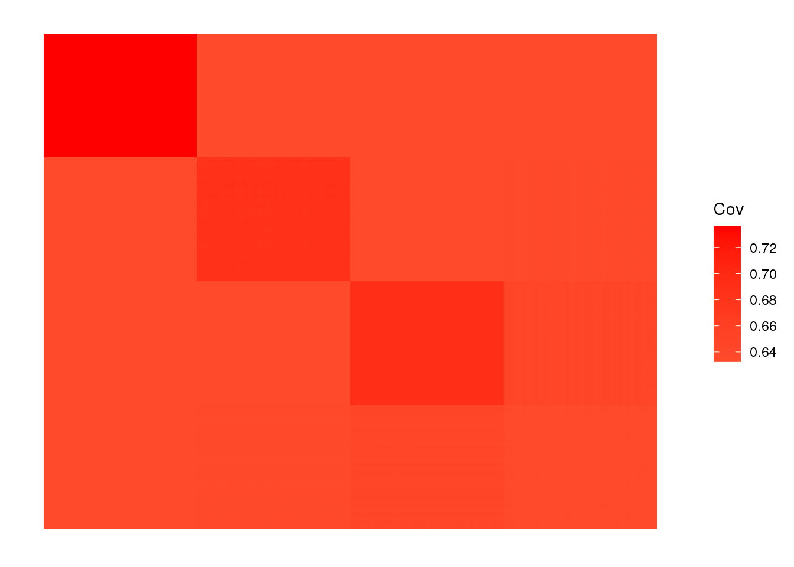
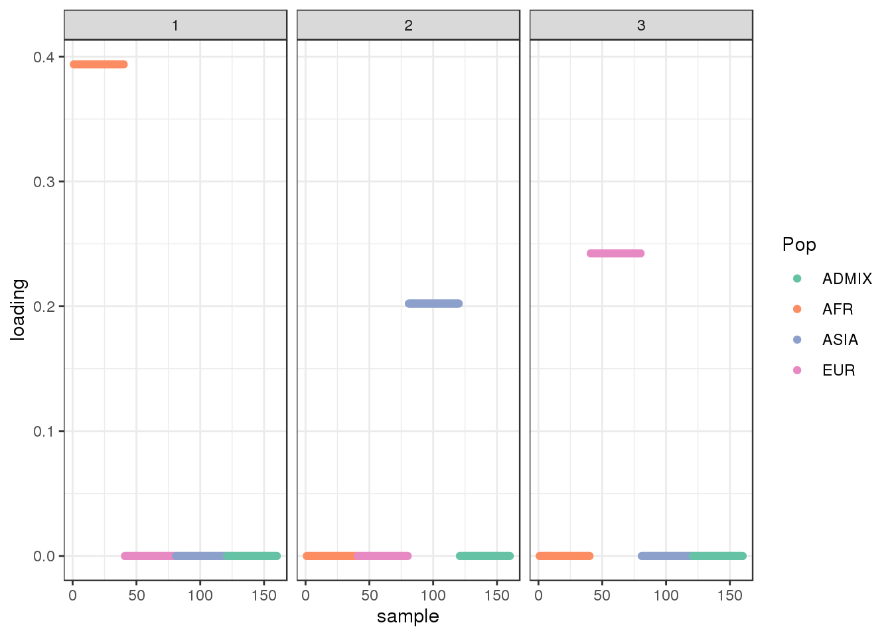
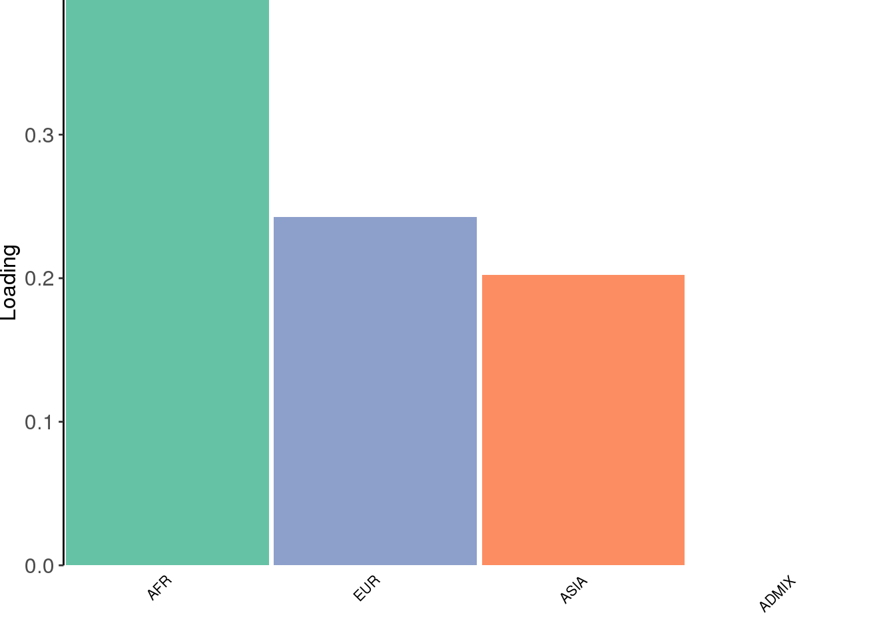
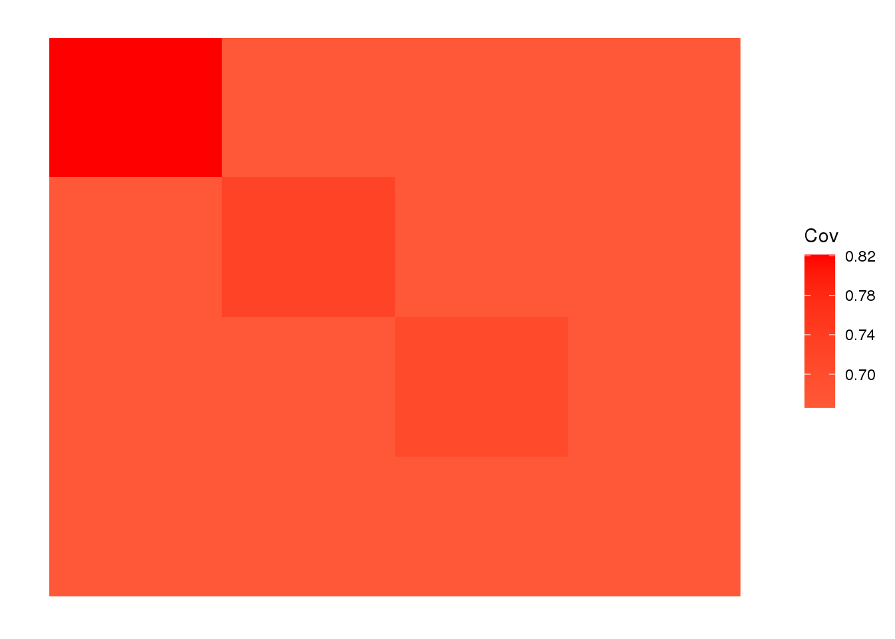
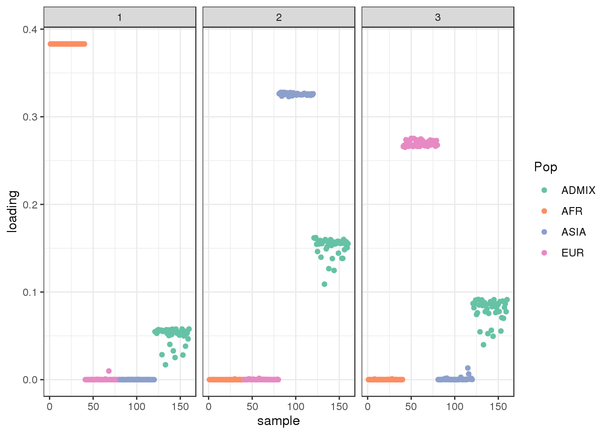
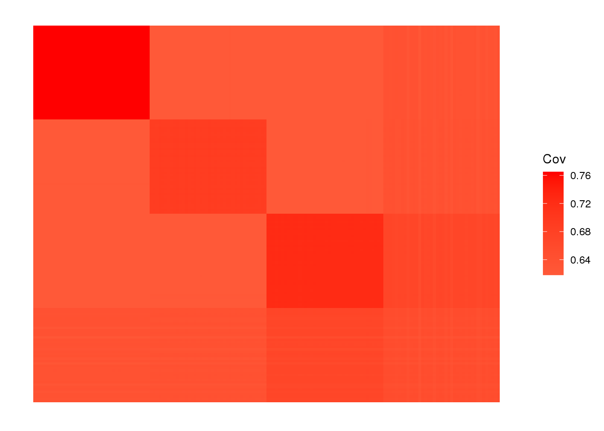

AmericanAdmixture_4B11_fix
Joseph Marcus
2020-05-18
Last updated: 2020-05-21
Checks: 7 0
Knit directory: drift-workflow/analysis/
This reproducible R Markdown analysis was created with workflowr (version 1.6.1). The Checks tab describes the reproducibility checks that were applied when the results were created. The Past versions tab lists the development history.
Great! Since the R Markdown file has been committed to the Git repository, you know the exact version of the code that produced these results.
Great job! The global environment was empty. Objects defined in the global environment can affect the analysis in your R Markdown file in unknown ways. For reproduciblity it’s best to always run the code in an empty environment.
The command set.seed(20190211) was run prior to running the code in the R Markdown file. Setting a seed ensures that any results that rely on randomness, e.g. subsampling or permutations, are reproducible.
Great job! Recording the operating system, R version, and package versions is critical for reproducibility.
Nice! There were no cached chunks for this analysis, so you can be confident that you successfully produced the results during this run.
Great job! Using relative paths to the files within your workflowr project makes it easier to run your code on other machines.
Great! You are using Git for version control. Tracking code development and connecting the code version to the results is critical for reproducibility.
The results in this page were generated with repository version 2e57d3d. See the Past versions tab to see a history of the changes made to the R Markdown and HTML files.
Note that you need to be careful to ensure that all relevant files for the analysis have been committed to Git prior to generating the results (you can use wflow_publish or wflow_git_commit). workflowr only checks the R Markdown file, but you know if there are other scripts or data files that it depends on. Below is the status of the Git repository when the results were generated:
Ignored files:
Ignored: .snakemake/
Ignored: data/datasets/
Ignored: data/raw/
Ignored: data/simulations/
Ignored: notebooks/.ipynb_checkpoints/
Ignored: output/
Ignored: sandbox/.ipynb_checkpoints/
Unstaged changes:
Modified: analysis/OutOfAfrica_3G09_fix.Rmd
Note that any generated files, e.g. HTML, png, CSS, etc., are not included in this status report because it is ok for generated content to have uncommitted changes.
These are the previous versions of the repository in which changes were made to the R Markdown (analysis/AmericanAdmixture_4B11_fix.Rmd) and HTML (docs/AmericanAdmixture_4B11_fix.html) files. If you’ve configured a remote Git repository (see ?wflow_git_remote), click on the hyperlinks in the table below to view the files as they were in that past version.
| File | Version | Author | Date | Message |
|---|---|---|---|---|
| Rmd | 2e57d3d | Joseph Marcus | 2020-05-21 | wflow_publish(“AmericanAdmixture_4B11_fix.Rmd”) |
Here I visualize population structure with simulated data from the AmericanAdmixture_4B11 scenario. See Browning et al. 2018 for details.
Below, I show a number of EBMF solutions and in each of them I don’t display the first shared factor which is prefixed to the one-vector and scale the loadings by the prior variance. I only describe the loadings that remain after the shared factor.
Imports
Import the required libraries and scripts:
suppressMessages({
library(lfa)
library(flashier)
library(drift.alpha)
library(ggplot2)
library(RColorBrewer)
library(reshape2)
library(tidyverse)
library(alstructure)
source("../code/structure_plot.R")
})Data
data_path <- "../output/simulations/AmericanAdmixture_4B11/rep2.txt"
G <- t(as.matrix(read.table(data_path, sep=" ")))
colnames(G) <- NULL
rownames(G) <- NULL
n <- nrow(G)
daf <- colSums(G) / (2 * n)
colors <- brewer.pal(8, "Set2")
# filter out too rare and too common SNPs
Y <- G[,((daf>=.05) & (daf <=.95))]
p <- ncol(Y)
print(n)[1] 160print(p)[1] 25026# sub-population labels from stdpop
labs <- rep(c("AFR", "EUR", "ASIA", "ADMIX"), each=40)we end up with 160 individuals and ~25000 SNPs. View fitted the sample covariance matrix:
plot_cov((1.0 / p) * Y %*% t(Y), as.is=T)
flash [greedy]
Run the greedy algorithm:
ones <- matrix(1, nrow = n, ncol = 1)
ls.soln <- t(solve(crossprod(ones), crossprod(ones, Y)))
fl <- flash.init(Y) %>%
flash.init.factors(EF = list(ones, ls.soln),
prior.family=c(prior.bimodal(), prior.normal())) %>%
flash.fix.loadings(kset = 1, mode = 1L) %>%
flash.backfit() %>%
flash.add.greedy(Kmax=8, prior.family=c(prior.bimodal(), prior.normal()))Backfitting 1 factors (tolerance: 5.97e-02)...
Difference between iterations is within 1.0e-01...
Wrapping up...
Done.
Adding factor 2 to flash object...
Adding factor 3 to flash object...
Adding factor 4 to flash object...
Adding factor 5 to flash object...
Factor doesn't significantly increase objective and won't be added.
Wrapping up...
Done.sd <- unlist(lapply(fl$fitted.g[[2]], '[[', 3))
L <- fl$flash.fit$EF[[1]]
LDsqrt <- L %*% diag(sd)
K <- ncol(LDsqrt)
plot_loadings(LDsqrt[,2:K], labs) + scale_color_brewer(palette="Set2")
view structure plot:
create_structure_plot(L=LDsqrt[,2:K], labels=labs, colors=colors)
view fitted covariance matrix:
plot_cov(LDsqrt %*% t(LDsqrt), as.is=T)
the greedy algorithm picks up a bit of a signal of admixture but misses out on the African contribution.
flash [backfit]
Run flash [backfit] initializing from the greedy solution:
flbf <- fl %>%
flash.backfit() %>%
flash.nullcheck(remove=TRUE)Backfitting 4 factors (tolerance: 5.97e-02)...
Difference between iterations is within 1.0e+03...
Difference between iterations is within 1.0e+02...
Difference between iterations is within 1.0e+01...
Difference between iterations is within 1.0e+00...
Difference between iterations is within 1.0e-01...
Difference between iterations is within 1.0e-02...
Wrapping up...
Done.
Nullchecking 4 factors...
Done.sd <- unlist(lapply(flbf$fitted.g[[2]], '[[', 3))
L <- flbf$flash.fit$EF[[1]]
LDsqrt <- L %*% diag(sd)
K <- ncol(LDsqrt)
plot_loadings(LDsqrt[,2:K], labs) + scale_color_brewer(palette="Set2")
view structure plot:
create_structure_plot(L=LDsqrt[,2:K], labels=labs, colors=colors)
view fitted covariance matrix:
plot_cov(LDsqrt %*% t(LDsqrt), as.is=T)
The backfitting algorithm misses out on the signal of admixture and finds only 3 population specific factors after the shared factor.
drift
Run drift initializing from the greedy solution:
init <- init_from_data(Y, Kmax=6)
dr <- drift(init, miniter=2,
maxiter=1000,
tol=0.01,
verbose=TRUE) 1 : -3277004.462
2 : -3275796.069
3 : -3274966.799
4 : -3274441.299
5 : -3274128.136
6 : -3273955.784
7 : -3273849.958
8 : -3273788.788
9 : -3273747.105
10 : -3273722.617
11 : -3273708.464
12 : -3273700.001
13 : -3273692.257
14 : -3273681.993
15 : -3273673.984
16 : -3273668.143
17 : -3273663.921
18 : -3273660.887
19 : -3273658.704
20 : -3273656.905
21 : -3273654.865
22 : -3273652.614
23 : -3273650.949
24 : -3273649.702
25 : -3273648.745
26 : -3273647.990
27 : -3273647.377
28 : -3273646.864
29 : -3273646.427
30 : -3273646.047
31 : -3273645.711
32 : -3273645.411
33 : -3273645.140
34 : -3273644.892
35 : -3273644.665
36 : -3273644.454
37 : -3273644.258
38 : -3273644.075
39 : -3273643.902
40 : -3273643.739
41 : -3273643.585
42 : -3273643.438
43 : -3273643.298
44 : -3273643.164
45 : -3273643.036
46 : -3273642.914
47 : -3273642.795
48 : -3273642.682
49 : -3273642.573
50 : -3273642.467
51 : -3273642.366
52 : -3273642.267
53 : -3273642.173
54 : -3273642.081
55 : -3273641.993
56 : -3273641.907
57 : -3273641.824
58 : -3273641.744
59 : -3273641.666
60 : -3273641.591
61 : -3273641.518
62 : -3273641.448
63 : -3273641.380
64 : -3273641.314
65 : -3273641.250
66 : -3273641.189
67 : -3273641.130
68 : -3273641.073
69 : -3273641.018
70 : -3273640.966
71 : -3273640.915
72 : -3273640.867
73 : -3273640.820
74 : -3273640.776
75 : -3273640.733
76 : -3273640.692
77 : -3273640.653
78 : -3273640.616
79 : -3273640.581
80 : -3273640.547
81 : -3273640.515
82 : -3273640.485
83 : -3273640.456
84 : -3273640.428
85 : -3273640.402
86 : -3273640.377
87 : -3273640.353
88 : -3273640.331
89 : -3273640.310
90 : -3273640.290
91 : -3273640.271
92 : -3273640.253
93 : -3273640.236
94 : -3273640.219
95 : -3273640.204
96 : -3273640.190
97 : -3273640.176
98 : -3273640.163
99 : -3273640.151
100 : -3273640.139
101 : -3273640.128
102 : -3273640.118
103 : -3273640.108 sd <- sqrt(dr$prior_s2)
L <- dr$EL
LDsqrt <- L %*% diag(sd)
K <- ncol(LDsqrt)
plot_loadings(LDsqrt[,2:K], labs) + scale_color_brewer(palette="Set2")
view structure plot:
create_structure_plot(L=LDsqrt[,2:K], labels=labs, colors=colors)
view fitted covariance matrix:
plot_cov(LDsqrt %*% t(LDsqrt), as.is=T)
drift much better represents the admixture signal but misses the EUR/ASIA two population factor.
sessionInfo()R version 3.5.1 (2018-07-02)
Platform: x86_64-pc-linux-gnu (64-bit)
Running under: Scientific Linux 7.4 (Nitrogen)
Matrix products: default
BLAS/LAPACK: /software/openblas-0.2.19-el7-x86_64/lib/libopenblas_haswellp-r0.2.19.so
locale:
[1] LC_CTYPE=en_US.UTF-8 LC_NUMERIC=C
[3] LC_TIME=en_US.UTF-8 LC_COLLATE=en_US.UTF-8
[5] LC_MONETARY=en_US.UTF-8 LC_MESSAGES=en_US.UTF-8
[7] LC_PAPER=en_US.UTF-8 LC_NAME=C
[9] LC_ADDRESS=C LC_TELEPHONE=C
[11] LC_MEASUREMENT=en_US.UTF-8 LC_IDENTIFICATION=C
attached base packages:
[1] stats graphics grDevices utils datasets methods base
other attached packages:
[1] alstructure_0.1.0 forcats_0.5.0 stringr_1.4.0
[4] dplyr_0.8.5 purrr_0.3.4 readr_1.3.1
[7] tidyr_1.0.2 tibble_3.0.1 tidyverse_1.3.0
[10] reshape2_1.4.3 RColorBrewer_1.1-2 ggplot2_3.3.0
[13] drift.alpha_0.0.9 flashier_0.2.4 lfa_1.9.0
loaded via a namespace (and not attached):
[1] httr_1.4.1 jsonlite_1.6 modelr_0.1.6 assertthat_0.2.1
[5] mixsqp_0.3-43 cellranger_1.1.0 yaml_2.2.0 ebnm_0.1-24
[9] pillar_1.4.3 backports_1.1.6 lattice_0.20-38 glue_1.4.0
[13] digest_0.6.25 promises_1.0.1 rvest_0.3.5 colorspace_1.4-1
[17] htmltools_0.3.6 httpuv_1.4.5 Matrix_1.2-15 plyr_1.8.4
[21] pkgconfig_2.0.3 invgamma_1.1 broom_0.5.6 haven_2.2.0
[25] corpcor_1.6.9 scales_1.1.0 whisker_0.3-2 later_0.7.5
[29] git2r_0.26.1 farver_2.0.3 generics_0.0.2 ellipsis_0.3.0
[33] withr_2.2.0 ashr_2.2-50 cli_2.0.2 magrittr_1.5
[37] crayon_1.3.4 readxl_1.3.1 evaluate_0.14 fansi_0.4.1
[41] fs_1.3.1 nlme_3.1-137 xml2_1.3.2 truncnorm_1.0-8
[45] tools_3.5.1 hms_0.5.3 lifecycle_0.2.0 munsell_0.5.0
[49] reprex_0.3.0 irlba_2.3.3 compiler_3.5.1 rlang_0.4.5
[53] grid_3.5.1 rstudioapi_0.11 labeling_0.3 rmarkdown_1.10
[57] gtable_0.3.0 DBI_1.0.0 R6_2.4.1 lubridate_1.7.4
[61] knitr_1.20 workflowr_1.6.1 rprojroot_1.3-2 stringi_1.4.6
[65] parallel_3.5.1 SQUAREM_2020.2 Rcpp_1.0.4.6 vctrs_0.2.4
[69] dbplyr_1.4.3 tidyselect_1.0.0